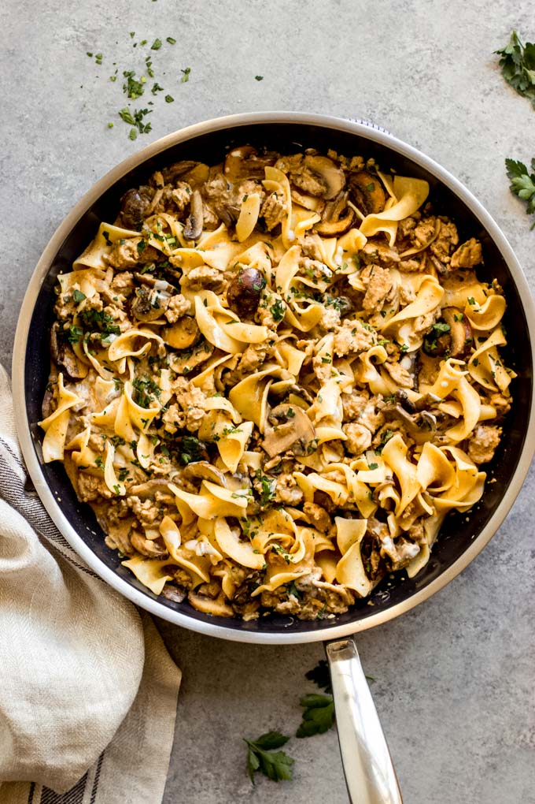

Turkey Stroganoff

- Chop up 1 small box of mushrooms.
- Add 1 small chopped onion.
- Saute onions and mushrooms until onions are translucent.
- Remove mushrooms and onions from skillet, and add 1 pound of ground turkey.
- Cook ground turkey until browned.
- Add 3 teaspoons of garlic to turkey.
- Mix 1 tablespoon of flour with 2 cups of chicken broth.
- Add chicken broth mixture to turkey.
- Once broth/turkey mixture is simmering, add 1/2 teaspoon paprika and 1 teaspoon worcestershire sauce.
- Cook for 3 minutes, then add mushrooms/onions to mix.
- Cook for 3 more minutes, then remove from heat.
- Add 1/2 cup of sour cream to mix.
- Serve over rice or egg noodles.